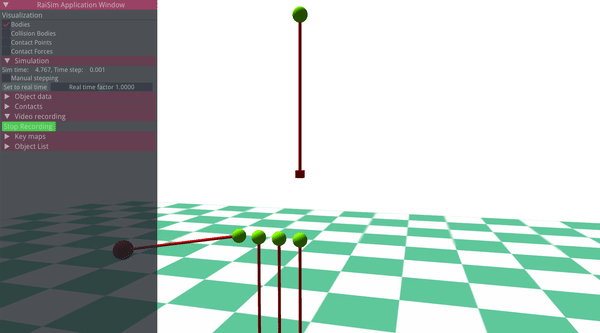
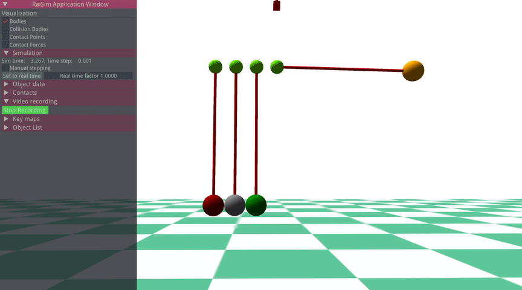

RaiSim World¶
raisim::World class creates/manages all resources.
It is the only class that you have to create yourself, except a few math classes and materials.
All objects defined in the same Wolrd class instance can collide each other unless otherwise their collision mask and group explicitly disables the collision.
Currently, you can only dynamically generate the world. A new constructor for generating a world from an XML script will be introduced soon (the existing one is not thoroughly tested and not recommended yet).
The world class contains the following features:
Adding New Objects¶
To add a new object of a shape X, a method named addX is used.
For example, to add a sphere
raisim::World world;
auto sphere = world.addSphere(0.5, 1.0);
Here sphere is a pointer to the internal resource.
It can be used to access or to modify the internal variables.
There are three hidden arguments to all object-creation methods: material, collisionGroup and collisionMask.
Descriptions of the collision varaibles are given in “Collision and Contact” chapter.
material argument specifies the material which governs contact dynamics.
It is further explained in “Material System” chapter.
The list of objects is given in “Object” chapter.
Once an object is added, a name can be set as below
sphere.setName("ball");
A pointer to an object with a specific name can be retrieved as below
auto ball = world.getObject("ball");
An object might contain multiple bodies (i.e., articulated system). To designate each body, local index can be used. To keep the interface consistent, many methods ask for the local index even for simgle body objects. In a single body object case, local index arguments are ignored and users can simply put 0 to comply with the AIP.
Adding constraints¶
RaiSim Offers two types of constraints: stiff wire constraint and soft wire constraint. Wire constraints are unilateral; they can only pull. Stiff wire is a hard constraint and solved using the contact solver. Soft wire is a soft constraint and acts like a spring when compressed.
Wires are defined by which bodies they are attached to (both global and local indicies), at what position they are attached in the respective body frames and the length. Compliant wire has one more protpery which is stiffness.
Here are a couple of examples of wires visualized in RaiSim Ogre.
 Changing Simulation Parameters¶
The following paramters can be changed using the world API
Time step
RaiSim uses a fixed time step. The time step obtained and modified using getTimeStep and setTimeStep method.